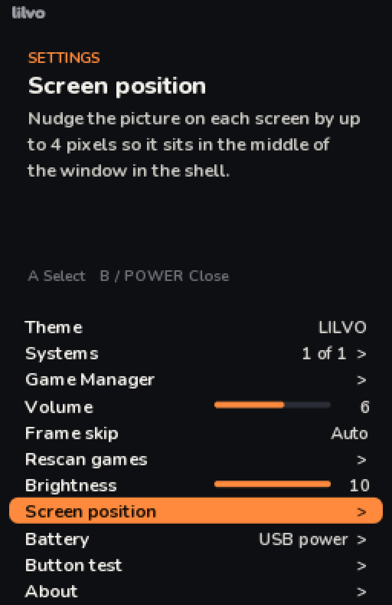
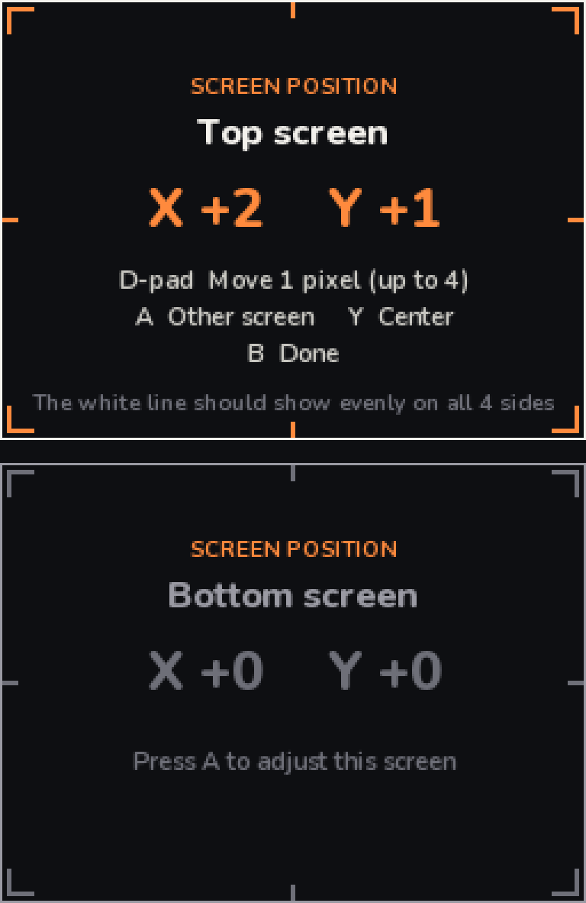

Lining up the picture with the window
If you watched the GBA part of my last video, you may have noticed the black border around the picture wasn't even on all four sides. That's the shell window and the screen not lining up perfectly, and it happens a little on every hand-built unit. Now it can be fixed in the settings.
Why it's possible
The screens are small panels of 296 × 240 pixels, but DS Micro only ever lights the middle 256 × 192, the same as a DS. That leaves 20 spare pixels on the left and right and 24 above and below. So the picture doesn't have to sit in the exact middle of the panel. It can move a few pixels to sit in the middle of the window instead.
The drawings already said the visible area sits about 0.4 mm off-centre in the screen module, roughly 3 pixels. I'd meant to correct that in software since October. This finally does it, and handles assembly differences on top.
How it works


- Each screen shows a test pattern: a 1-pixel white line around the edge, corner marks and centre ticks.
- The D-pad moves the picture 1 pixel at a time, up to 4 in each direction, until the white line shows evenly on all four sides.
- A switches between the top and bottom screen, Y puts it back in the middle, B is done.
- It saves right away and applies everywhere: home screen, menus and games.
- Touch follows the picture, so tapping still lands where you aim.
- Moving only redraws the few pixels at the edge, so nothing flickers while you adjust.
Going the full 4 pixels both ways at once can clip a few pixels off one corner, because the panel's corners are rounded. In practice you only need 1 to 3.
Update 81 broke something, 82 fixes it
The first version (update 81) worked, but after moving a screen, games got much slower. The screens send a signal at a set line of each refresh so the console knows when it's safe to draw without tearing. When moving the picture, 81 also moved that line, and after that the signal stopped arriving the way the system expected. Every frame waited for it until it gave up, and games dropped to about 25 frames per second.
Update 82 leaves that line exactly where it was at start-up and only moves the picture. A 4-pixel difference makes no difference to tearing, and the frame rate stays where it was.